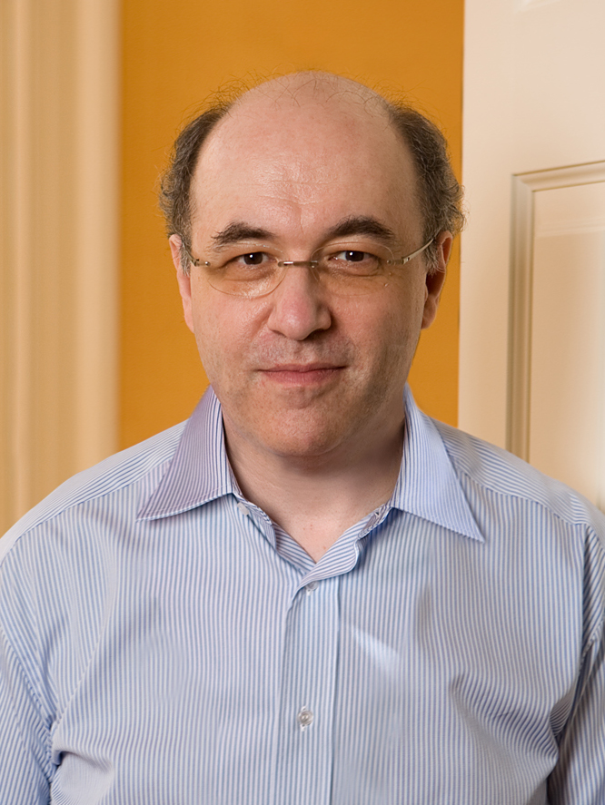

|

Stephen Wolfram
|
|


Alyssa Adams

Genaro Martínez

Chiara Marletto

Samira El Yacoubi

Rodrigo Torres-Aviles

Andrew Wuensche

Stephen Wolfram
|
Dr. Alyssa AdamsThe Role of Emergence in Open-ended Systems
Alyssa is currently a research fellow at the University of Wisconsin-Madison. She was Lab director at Veda Data and researcher at LABORES. Her main research interest is how to model life and how life is different from non-life: Open-ended evolution, the ability for a system to evolve, adapt, and innovate without grinding to a halt. She is currently studying models that recreates this aspect of life using cellular automata. The model can be utilised to implement state-dependent feedback and multiple layers of interaction, which are both key in generating open-ended evolution. Dr. Chiara MarlettoConstructor Theory of Life and its applications
Chiara is a Research Fellow at Wolfson College and at the Physics Department, University of Oxford. Her research interests include Quantum Theory of Computation, Foundations of Physics, Condensed-Matter Physics and Quantum Biology. Some of her recent research has harnessed a recently proposed generalisation of the quantum theory of information -- Constructor Theory — to address issues at the foundations of the theory of control and causation in physics. Dr. Rodrigo Torres-AvilesTopological Dynamical Properties in Turing Machines
Rodrigo received his PhD in Applied Sciences from the Universidad de Concepción, Chile, in 2016. He is an Assistant Professor at the Universidad del Biobío in Chillán, Chile. His main research interest has relation with symbolic dynamics and automata properties. He is currently working in a national research project related with topological properties of Turing Machines. He works on topological, dynamical and undecidable problems associated to Turing machines. Dr. Stephen WolframA New Kind of Automata, That May Be Our Universe
Stephen Wolfram has made fundamental contributions to fields of quantum mechanics, cellular automata and computation, is the creator of Mathematica, Wolfram|Alpha and the Wolfram Language; the author of A New Kind of Science; and the founder and CEO of Wolfram Research. This year, Stephen Wolfram announced the Wolfram Physics Project, a project to find a fundamental theory of physics. |
Dr. Genaro MartínezCollision-based Computing with Cellular Automata
Genaro is a full-time researcher and lecturer at the National Polytechnic Institute in Mexico City. A member of Unconventional Computing Lab (University of the West of England, U.K.) and various other labs around the world. His main research is focused in cellular automata theory with particularity in unconventional computing models, such as computing in cellular automata colliders, computing in cellular automata with competing patterns, Life-like rules and one- dimensional cellular automata with computing capacities. He is also interested in natural and unconventional computing. Dr. Samira El YacoubiSome control and observation issues in Cellular Automata
Samira is a full professor at the University of Perpignan, and a researcher at the UMR Espace-Dev. She received her PhD in Applied Mathematics and her habilitation on Systems Theory from the University of Perpignan (France). Her research focuses on the study of distributed parameters systems and related control theory by means of Cellular Automata models. She has developed new tools for studying some analysis problems such as identification, spreadability, regional controllability and observability. Prof. Andrew WuenscheNavigating Isotropic Cellular Automata Rule-space
Andrew discovered inverse algorithms for predecessors states in cellular automata, allowing their basins of attraction to be efficiently computed. His book "The Global Dynamics of Cellular Automata" was published in SFI's Studies in the Sciences of Complexity in 1992. He generalised methods for Random Boolean Networks and multi-value networks, applied to gene regulation. He is the author of the software program "Discrete Dynamics Lab" (DDLab), used in research and education, documented in his recent book "Exploring Discrete Dynamics”. |
 |
 |
 |
 |